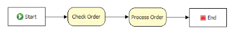
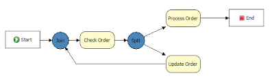
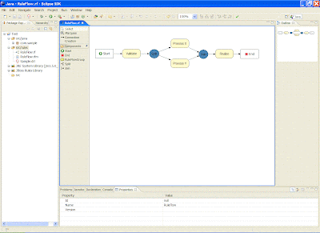

RuleFlow (Kris Verlaenen)
<sampleruleflow1.gif>

Figure 1: A ruleflow showing a simple sequence of two ruleflow-groups that makes sure that all rules responsible for validating orders are checked first before trying to process these orders. </sampleruleflow1.gif>
Figure 2: A more advanced ruleflow showing parallelism, conditional evaluation of rule sets (e.g. the rule set responsible for processing orders should only be executed if no errors were found when checking the order) and looping.The JBoss Rules IDE has also been extended to allow the creating of these ruleflows:
* A new editor for creating ruleflow files (.rf), as shown in the next screenshot. Whenever you try to save such a ruleflow file, a corresponding model file (.rfm) is created that contains the definition of the ruleflow. The ruleflow file (.rf) contains the graphical information.
A wizard for creating a new ruleflow file.

Ruleflow definitions can be added to a RuleBase almost the same way rules are added to one:
// create a package containing all the rules
final PackageBuilder builder = new PackageBuilder();
builder.addPackageFromDrl( new InputStreamReader(
getClass().getResourceAsStream( "rules.drl" ) ) );
final Package pkg = builder.getPackage();
// create a new process containing the ruleflow
ProcessBuilder processBuilder = new ProcessBuilder();
processBuilder.addProcessFromFile(new InputStreamReader(
getClass().getResourceAsStream( "ruleflow.rfm" ) ) );
// add the package and the processes to the RuleBase
final RuleBase ruleBase = RuleBaseFactory.newRuleBase();
ruleBase.addPackage( pkg );
ruleBase.addProcess( processBuilder.getProcesses()[0]);
// create a new working memory for this RuleBase
final WorkingMemory workingMemory = ruleBase.newWorkingMemory();
Ruleflows can then be started by
// add elements to the working memory here, then start
// the ruleflow to start executing the first ruleset
workingMemory.startProcess(1);
More details on how to use ruleflow will be added in the near future. We are however already interested in getting some feedback about the usefulness and useability of ruleflows, and possibly some extension you might find interesting.
Kris